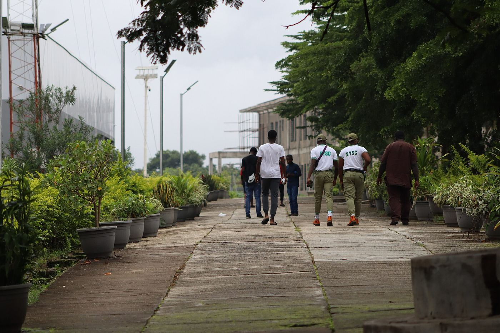
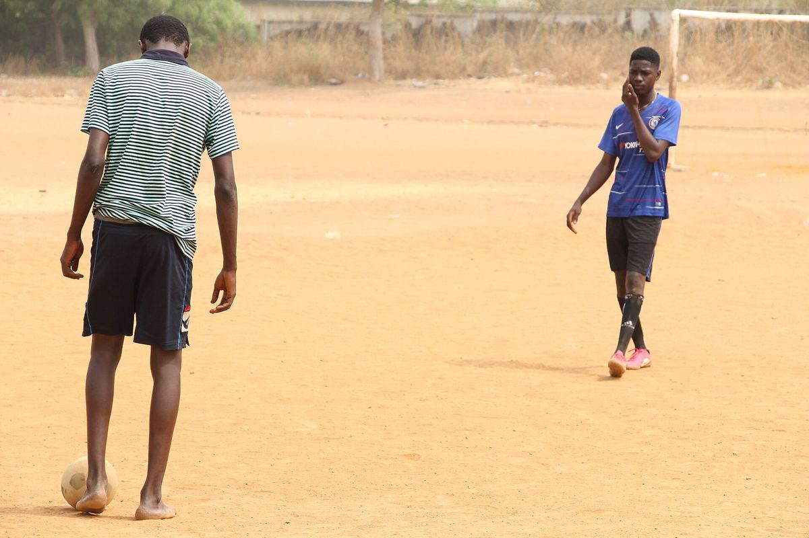

20Nov
Academic
Inaugural Lecture: Climate-Smart Farming for the Middle Belt
Main Auditorium · 10:00 AM
A serene green setting designed to inspire contemplation, innovation, collaborative breakthrough, and lifelong friendships.
At Okunland University, we believe that academic brilliance flourishes within a safe, green, and technologically connected environment. From state-of-the-art laboratory complexes and our solar-powered university library to inter-faculty athletic derbies and active student guilds, life on our campus is as vibrant as it is inspiring.
Our Directorate of Student Affairs leads an inclusive, student-centred approach — from modern hostels to mentorship incubators — so that every student can thrive academically, socially and personally.



Every student is supported by a network of advisers, counsellors and services coordinated by the Directorate of Student Affairs.
A named adviser for every student, plus the Learning Commons for writing, maths and study-skills tutoring.
Free, confidential counselling, peer support groups and a 24-hour wellness line.
Open 24/7 with doctors, nurses, a pharmacy and ambulance; NHIA-registered.
CV clinics, internships, SIWES placement support and the OKU Venture Incubator.
Accessible housing, exam accommodations, sign-language interpreters and assistive tech.
Visas, orientation, airport pick-up and a buddy programme for students from 18 countries.
Multi-faith worship centres and chaplains serving Christian and Muslim students.
Campus-wide Wi-Fi, 24/7 e-library and solar-backed power in key facilities.
Twelve halls of residence house more than 9,000 students. Each hall has a resident warden, hall executive council, study lounges, laundry and common room — and a proud identity in the inter-hall games.
| Hall | Residents | Room type |
|---|---|---|
| Heritage Hall (Keystone & final year) | Mixed (separate wings) | 2-person en-suite |
| Queen Amina Hall | Female | 4-person |
| Ahmadu Bello Hall | Male | 4-person |
| Moremi Hall | Female | 4-person |
| Attah Ayegba Hall | Male | 4-person |
| Postgraduate Village | Postgraduate | Single studio |
Your safety is our first priority. The Campus Security Unit works with the Nigeria Police, NSCDC and our host communities to keep OKU one of the safest campuses in the country.
From any campus phone, or call +234 (0) 803 123 4567 and ask for Security.
Request a security escort anywhere on campus after dark.
Free buses every 15 minutes, 6:00 PM – 12:00 midnight.
The democratically elected Student Union Government represents every student on Senate committees and runs the student guilds, welfare schemes and campus-wide events. Join a faculty association, a cultural society, a faith fellowship or start your own club.
NUESA, NIMSA, Law Students’ Society, Enactus, Google Developer Student Club
Heritage Dance Troupe, OKU Drama Society, Choir, Fashion & Design Guild
OKU FM 101.5, The Okunland Gazette student desk, Photography Club
Red Cross, Rotaract, Green Campus Initiative, Model United Nations

The OKU Eagles compete in the Nigerian University Games (NUGA) and West African University Games, and the inter-faculty derby league fills the 8,000-seat University Stadium every weekend.
Main Auditorium · 10:00 AM
University Stadium · 4:00 PM
Convocation Square · 9:00 AM
Senate Building & online · 9:00 AM
Amphitheatre · 6:00 PM
Convocation Square · All day
Student Wellness Centre · 2:00 PM
All faculties
Robotics & Mechatronics Hub · 48 hrs
The full video tour will be embedded here once the university’s official video is uploaded. In the meantime, book an in-person guided tour — they run every weekday at 10:00 AM and 2:00 PM.
Book a campus visit